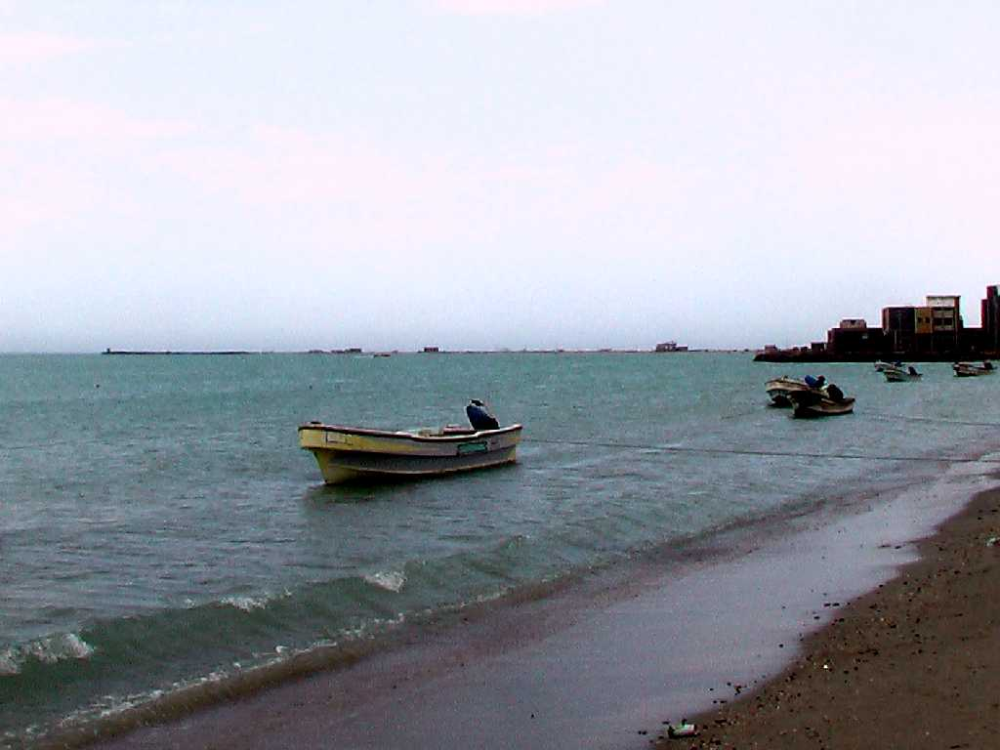
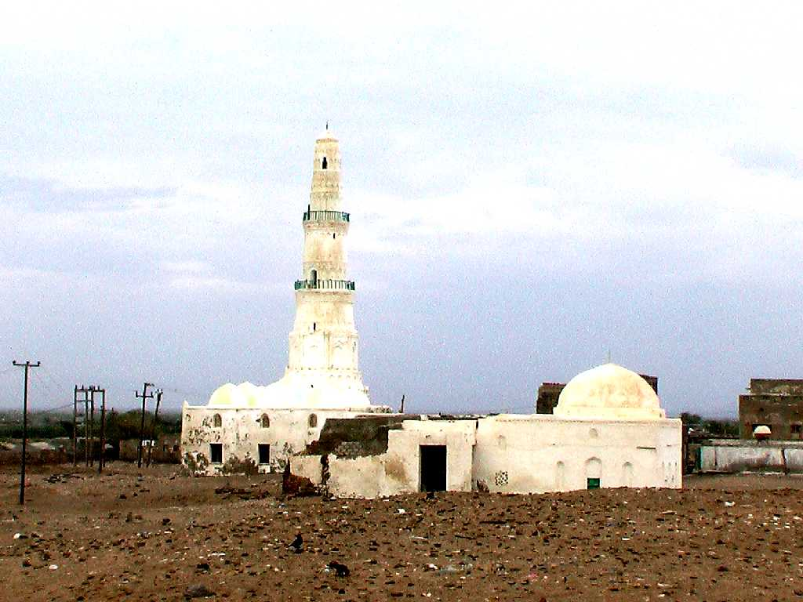
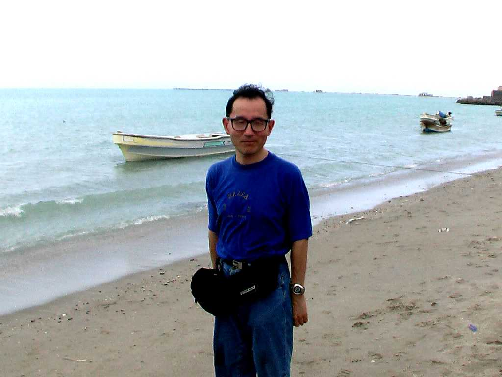
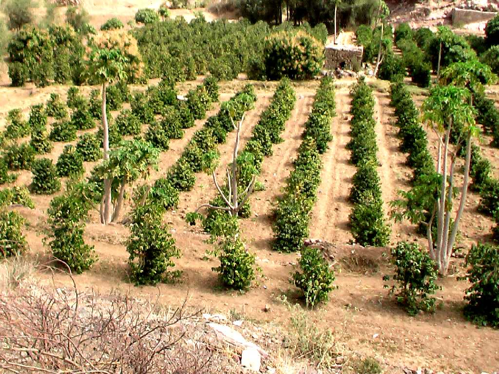
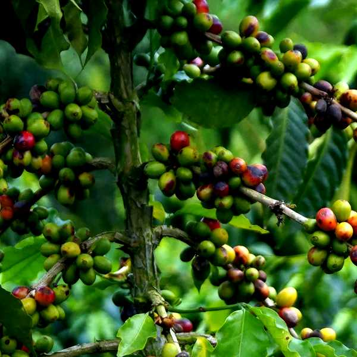

Port Mocha
高地で栽培されるコーヒー豆の原産地に隣接する世界最大のコーヒーの積出港であったモカ港

Al Shadeli Mosque Coffee Rumba


コーヒールンバの歌詞に出てくる♪アラブの偉いお坊さん♪のモスクと♪モカマタリ♪

January 21 2009 Mocha
コーヒー豆の７割はモカコーヒー豆の木を原種としており１６世紀からヨーロッパに大量輸出された

Mocha Mattari
モカ港付近の高地で栽培されているモカマタリ

Mocha Mattari